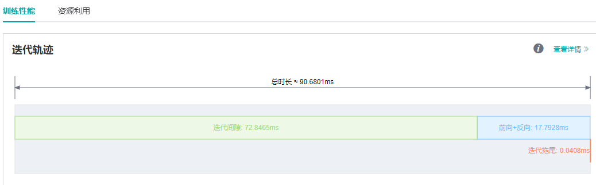
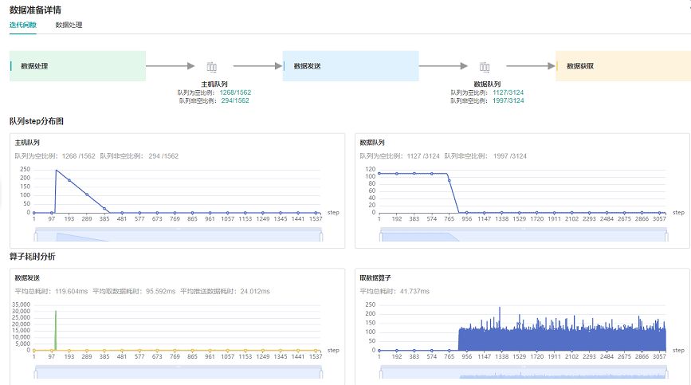
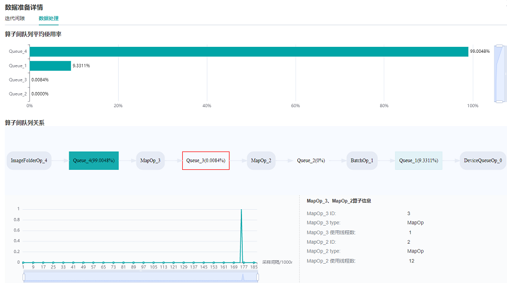
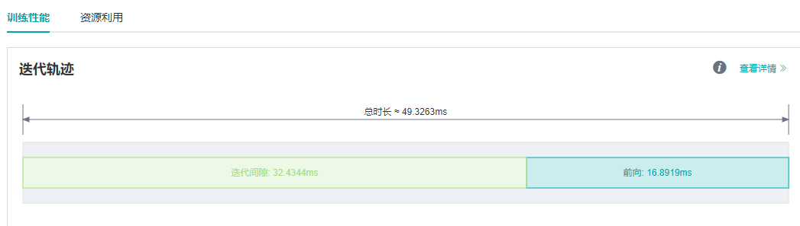
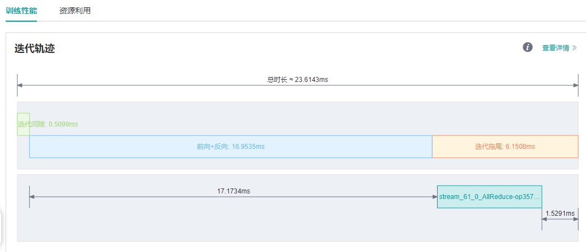
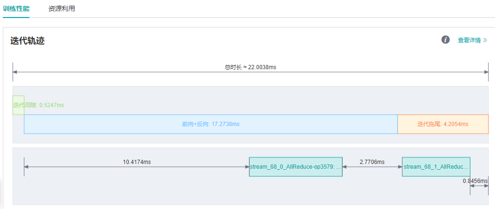

性能调试案例

Profiler为MindSpore提供了性能调优能力，针对算子性能、数据处理性能等提供了易用、丰富的调试功能，帮助用户快速定位、解决性能问题。
本章将介绍性能调优的常见方法及案例，以及一些常见问题的处理。
快速入门
Profiler的功能介绍及使用说明请参见教程：
本节将通过三个典型案例介绍Profiler工具的常见使用方式。
案例一：迭代间隙过长
在MindSpore ModelZoo中运行ResNet50单卡训练脚本，batch size设置为32，发现单step时间约为90ms，性能较差。 通过MindInsight性能分析页面观察到迭代轨迹中的迭代间隙过长，这通常说明数据是性能瓶颈点。

图1： 迭代轨迹中的迭代间隙过长
查看数据准备详情页面中的迭代间隙标签页，我们观察到，数据队列在前期有较多的数据，后期数据的个数变为0，原因是前期在图编译阶段已经开始了数据集的加载和增强，队列中随即缓存了多条数据； 而后期正常训练开始后，队列中的数据被消费的速度要快于被生产的速度，因此数据队列逐渐变为空，说明此时数据变成了瓶颈。观察主机队列也是同样的情况。综合分析，正常训练过程中， 数据处理为性能瓶颈点。 因此，需要进入数据准备详情页面中的数据处理标签页来查看具体问题。

图2：数据准备详情页面——迭代间隙
通过观察数据处理标签页的算子间队列关系，我们发现，Queue_3及其之后的队列使用率较低，即MapOp_3作为生产者生产数据的速度较慢，因此可以判定MapOp_3的性能还有优化空间，尝试对该算子进行性能优化。

图3：数据准备详情页面——数据处理
针对数据处理算子的性能优化，可以参考数据处理性能优化页面。 查看ResNet50网络中数据处理的代码部分，发现map算子的num_parallel_workers参数没有设置，默认为1，代码如下：
if do_train:
trans = [
C.RandomCropDecodeResize(image_size, scale=(0.08, 1.0), ratio=(0.75, 1.333)),
C.RandomHorizontalFlip(prob=0.5),
C.Normalize(mean=mean, std=std),
C.HWC2CHW()
]
else:
trans = [
C.Decode(),
C.Resize(256),
C.CenterCrop(image_size),
C.Normalize(mean=mean, std=std),
C.HWC2CHW()
]
data_set = data_set.map(operations=trans, input_columns="image")
将num_parallel_workers参数调整为12后，再次运行训练脚本，优化参考代码如下：
data_set = data_set.map(operations=trans, input_columns="image", num_parallel_workers=12)
通过MindInsight性能分析页面观察迭代轨迹，可以看到迭代间隙时长由72.8ms缩短到0.25ms，单step时长由90ms缩短到18.07ms。
图4：迭代轨迹中迭代间隙缩短
案例二：前向运行时间长
在MindSpore ModelZoo中运行VGG16模型的推理脚本，发现单step时间约为113.79ms，性能较差。 通过MindInsight性能分析页面观察到迭代轨迹中的前向运行时间很长。在单卡训练或推理过程中，前向耗时长通常考虑是否有算子的耗时时长可以优化。
图5：迭代轨迹中，前向运行时间过长
打开算子耗时统计详情页面，在算子详情页面中发现MatMul算子耗时占比较高。

图6：通过算子耗时详情页面寻找可优化算子
对于算子耗时优化，在float16和float32格式精度无明显差别的前提下，通常可使用计算量更小的float16格式來提高性能，参考使能混合精度页面。
优化参考代码如下：
...
network = vgg16(config.num_classes, config, phase="test")
network.add_flags_recursive(fp16=True)
在设置float16格式后，再次运行推理脚本，通过MindInsight性能分析页面观察迭代轨迹，可以看到前向运行时长由82.45ms缩短到16.89ms，单step耗时大大缩短。如下图所示：

图7：迭代轨迹中前向耗时缩短
案例三： 优化迭代拖尾
在MindSpore ModelZoo中运行ResNet50 8卡训练脚本，batch size设置为32，单step时间为23.6ms，期望能继续提高单step时间。 通过MindInsight性能分析页面观察迭代轨迹，发现迭代间隙与前反向已经没有多少优化的空间，考虑迭代拖尾是否可以优化。

图8：迭代轨迹中迭代拖尾耗时情况
迭代拖尾时间包含AllReduce梯度同步、参数更新等操作。正常情况下，AllReduce梯度同步会等所有反向算子执行结束，也就是对所有权重都计算出梯度后再一次性同步所有机器的梯度， 而使用AllReduce切分，我们可以在计算出一部分权重的梯度后，立刻进行这部分权重的梯度同步，这样梯度同步和剩余算子的梯度计算可以并行执行，也就隐藏了这部分AllReduce梯度同步的时间。 切分策略通常是手动尝试，寻找一个最优的方案（支持切分大于两段）。以ResNet50网络为例，该网络共有160个权重，[85, 160]表示第0至85个权重计算完梯度后立刻进行梯度同步，第86至160个权重计算完后再进行梯度同步，这里共切分两段，因此需要进行两次梯度同步。优化参考代码如下：
import mindspore as ms
from resnet50_imagenet2012_config.yaml import config
...
if config.net_name == "resnet50" or config.net_name == "se-resnet50":
# AllReduce split
ms.set_auto_parallel_context(all_reduce_fusion_config=[85, 160])
else:
# Another split stratety
ms.set_auto_parallel_context(all_reduce_fusion_config=[180, 313])
init()
对AllReduce进行切分后，再次运行ResNet50 8P脚本，通过MindInsight性能分析页面观察迭代轨迹，迭代拖尾时间由6.15ms缩短到4.20ms。如下图所示：

图9：迭代拖尾耗时变短
常见问题
启动失败
如您遇到启动失败的报错，请排查是否遇到了以下情况：
系统内存已无可用空间或剩余可用空间过小。
MindSpore版本和昇腾AI处理器配套软件包版本不匹配。